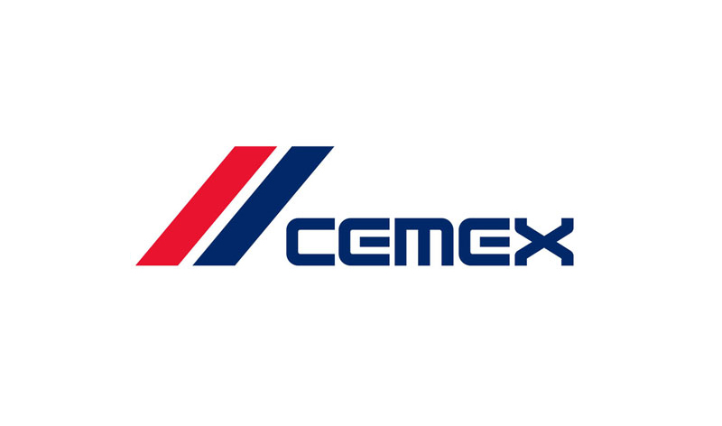

| ¿Qué es? | ¿Qué puestos relacionados a mi carrera hay? |
|---|---|
|
CEMEX es una empresa global de materiales de construcción que produce y comercializa cemento, concreto premezclado, agregados y otros
materiales de construcción relacionados. La empresa fue fundada en 1906 y tiene su sede en Monterrey, México, pero opera en más de 50
países en todo el mundo. CEMEX es una de las empresas más grandes del mundo en la industria de materiales de construcción, con una amplia presencia global y una capacidad de producción de más de 91 millones de toneladas métricas de cemento al año. La empresa trabaja con clientes en una variedad de sectores, incluyendo la construcción de infraestructura, la vivienda, la industria y el comercio. CEMEX se enfoca en la innovación y la sostenibilidad, y trabaja para desarrollar soluciones de construcción eficientes y respetuosas con el medio ambiente. La empresa ha sido reconocida por sus esfuerzos en la gestión sostenible de los recursos naturales y en la reducción de su impacto ambiental. En cuanto a su cultura empresarial, CEMEX se enfoca en la seguridad, la integridad y la responsabilidad social corporativa. La empresa valora la diversidad y la inclusión, y trabaja para crear un entorno de trabajo seguro y colaborativo para sus empleados. En resumen, CEMEX es una empresa líder en la industria de materiales de construcción que produce y comercializa cemento, concreto premezclado, agregados y otros materiales de construcción relacionados. La empresa se enfoca en la innovación, la sostenibilidad y la responsabilidad social corporativa para impulsar su éxito y contribuir positivamente al mundo.  |
CEMEX ofrece diversas oportunidades de trabajo para ingenieros en sistemas en distintas áreas de la empresa. Algunas de las áreas en las que se podrían desempeñar estos profesionales son: 1. Tecnología de la información: Los ingenieros en sistemas pueden trabajar en el departamento de tecnología de la información de CEMEX, encargándose del mantenimiento y la mejora de los sistemas de la empresa. 2. Desarrollo de software: Los ingenieros en sistemas pueden trabajar en el desarrollo de software para proyectos de la empresa, participando en el diseño, implementación y pruebas de software. 3. Análisis de datos: Los ingenieros en sistemas pueden trabajar en el análisis de datos de la empresa, colaborando con otros profesionales para extraer información útil para la toma de decisiones de la empresa. 4. Automatización de procesos: Los ingenieros en sistemas pueden trabajar en la automatización de procesos de la empresa, buscando mejorar la eficiencia y reducir los costos a través de la implementación de tecnología. Además de estas áreas, CEMEX también ofrece oportunidades de trabajo en áreas como gestión de proyectos, seguridad informática, gestión de redes, entre otras. La empresa valora la innovación y la colaboración, y busca atraer y retener a los mejores talentos para impulsar su éxito en el mercado. |